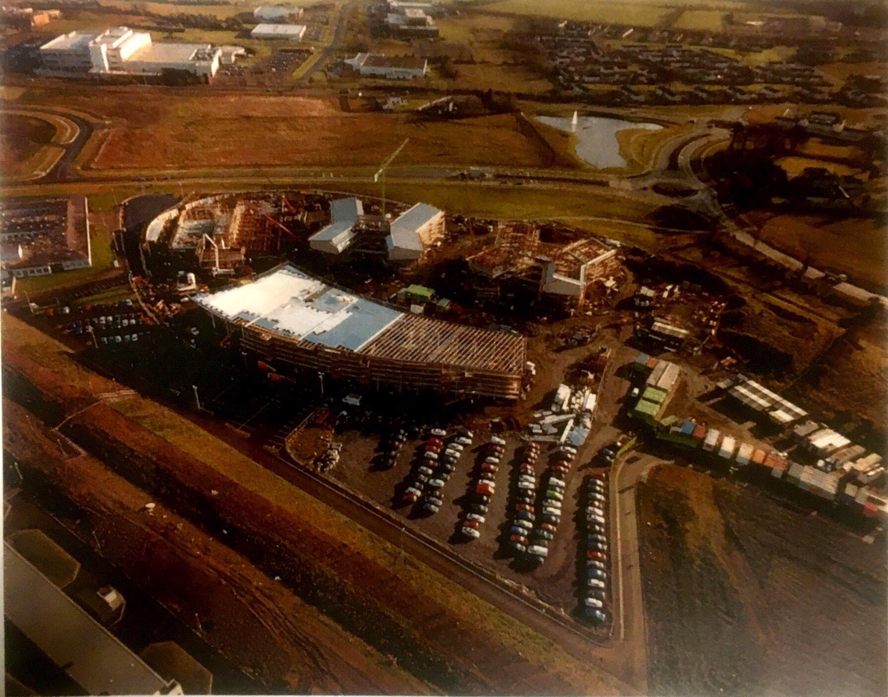
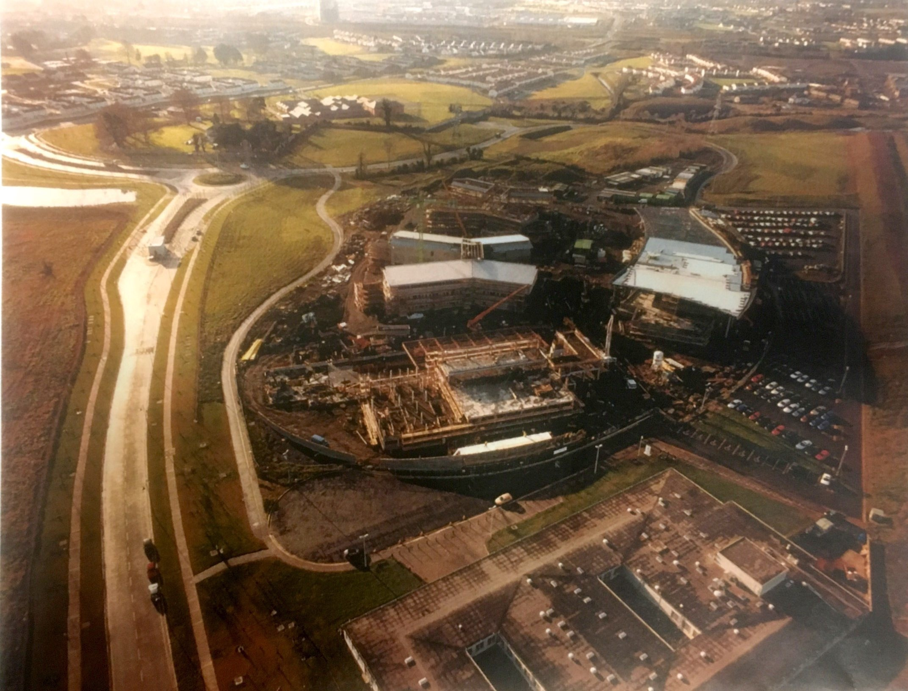

The year the story of ITB began. Originally supposed to be built beside the Leisureplex in Blanchardstown,but later moved to Corduff. Over the years, the names of courses changed.In the beginning ITB offered: Electronics, computing, business, business technology and Language studies.
In 2003, ITB recieved a 75 million euro investment which was used to build new buildings on campus, such as the Link building. The Link building was mostly used by apprentices studying in ITB such as plumbers or electricians.
In 2009, as ITB celebreated its 10 year anniversary, Creative Digital Media was introduced into ITB, one of the best and most popular courses offered!The course decided to set up bebo a page. Anyone who applied to the course was asked to join the bebo page as a way for students and lecturers to communicate.